这份文档讲三件事：系统由哪几块组成、为什么这样搭（第 1–8 节，第 6 节专讲知识库内部的 pgvector），以及这套方案现在的技术状况：哪里做得好、风险和欠账在哪、上生产前该改什么（第 9–10 节）。一张单据、一次部署、一次变更具体怎么走，见工作流；第一次上手见快速上手。
1. 一句话
九安自助审核平台 v0.7.10 的原服务端跑在测试台上，前面是新写的前端；AI 能力全在 Nexus 上，经 A2A 调用。单据进来、读完原件后，九安把它交给管理员指定的「审批 Agent」，拿回一份 AI 独立建议（建议通过 / 不建议通过 + 依据）；结论由人在单据池里复核。审核时要查的制度在 PostgreSQL 知识库里，由 Nexus 上的另一个 Agent 负责入库和检索。数据全部虚构，人工复核不回写汇联易。

2. 设计原则：为什么这样搭
| 原则 | 做法 | 换来什么 |
|---|---|---|
| 不改九安的源码，只打补丁 | 九安开发包原样放在
source/，poc/
按清单复制、打
patches/ 的 7
个补丁，打不上就报错、不留半成品 |
九安升级或拿到真实代码线时，补丁可以重放、可以评审；我们的改动一眼看得清 |
| 契约先行 | 九安自带的 Agent 契约
jiuan.（src/）定好请求信封和结果格式；审批流只认
review_；A2A
适配层按契约检查回答，不合格就在同一段对话里要求修正一次 |
换 Agent、换提示词、换模型都不用改九安；回答不合格能被抓住，不会把乱码写进单据 |
| 知识和 Agent 在一起 | 制度知识库的入库、检索都由 Nexus 上的 Agent 做；测试台不直连 PG、不解析文档；审核 Agent 经 Nexus 的数据连接器只读查库 | 前端只做调用；知识库的逻辑、凭证、网络都在 Nexus 一侧，客户换前端不用动知识库 |
| 密钥不进文件 | Agent 的调用密钥只由管理员在「Agent
接入」页粘贴，九安用数据密钥加密存库；Nexus 的 API 密钥由 operator
保存和续期；PG 的口令放在 Nexus 的数据库凭证密钥里；启动配置单独一份
secrets.（0600，当面交接） |
加、换、停用一个 Agent 都不改文件、不部署、不重启；仓库和交付包里没有任何真实密钥（出包时扫描） |
| 部署分三块，每块幂等、能演练的先演练 | PG 与知识库后端（kb/）→ Nexus 上的 Agent
与发布（audit-、customer-）→
前端（poc/）；kb/、migrate-、audit-
的两个脚本都有
-；deploy. 动
AWS 之前先跑全部测试和构建；换型、销毁要输入栈名确认 |
客户可以先用自己的 SSH 密钥部署 PG，再分批部署前端；重跑不会出事 |
| 测试台一台机器，正式环境拆开 | 测试阶段三块都在一台 m7g.xlarge 上（栈
andon-）；正式环境 PG
先行、前端分批（客户部署路线） |
测试台便宜、好重建；拆开的边界从第一天就按三块画好了 |
3. 运行时的组成
浏览器（管理员 poc-reviewer / 分析员 poc-checker，虚构账号）
│ HTTPS <DomainName>（jiuan-v0710.tinyboat.blog）
CloudFront（分发 Distribution；不缓存；转发 Host、Origin、Cookie 和查询串）
│ HTTP :4180（安全组只放 CloudFront 回源前缀列表 pl-3b927c52）
EC2 m7g.xlarge（arm64，Amazon Linux 2023，Node 24；与 Nexus 同 VPC 的公有子网）
├─ systemd 服务 andon-jiuan（用户 jiuan，0.0.0.0:4180，屏蔽 IMDS，出网只放行 Nexus）
│ ├─ 测试台外壳 poc/app
│ │ ├─ 前门 front.mjs：/ 给新前端（poc/web 的构建产物，CSP style-src 'self'）、口令登录、模拟来单（健康检查 /poc/healthz 由 server.mjs 先答）
│ │ ├─ 新前端用的接口 /api/analysis/v1/poc/*：复核、工作台、AI 轮次、原件分页、我的规则、知识库（带缓存）
│ │ ├─ 「Agent 接入」页的后端：Nexus 发布列表（经 nexus-ai-operator）、测试、调用记录、只给审批 Agent 路由
│ │ ├─ 进程内的假汇联易、出网守卫（只放 Nexus）
│ │ └─ 组合根 server.mjs：照九安的启动脚本组装九安副本，换掉配置、汇联易传输和出网
│ └─ 九安 v0.7.10 副本（开发包 + 补丁 0001–0007）：/analysis.html、/api/analysis/v1/*
│ 单据同步与流水线、读原件、Agent 任务服务（review_advice@1）、调用中间件 nexus-a2a、
│ A2A 适配层 providers/nexus-a2a.mjs、「Agent 接入」（启用记录加密存库）
├─ Docker 容器 jiuan-mysql（mysql:8.0，127.0.0.1:3306，库 jiuan）
└─ Docker 容器 nexus-pgvector（pgvector/pgvector:pg17，私网 IP:5432，库 nexus；PL/Python 的 kb_embed / kb_search 用实例角色调 Bedrock）
│
│ ① A2A 0.3 message/stream，Bearer <「Agent 接入」页启用时粘贴的调用密钥>
│ ② A2A 名片 /a2a/<发布编号>/.well-known/agent-card.json（公开，不带密钥）
│ ③ REST（nexus-ai-operator，用管理员自己的 Nexus API 密钥列发布）
Nexus nxs-beine1013（v0.3.28，同一个 VPC）
├─ 发布 pub_5c53e70d8dc7ddea → 「九安审核AI（PoC）」：审批 Agent，review_advice@1；经 PG 数据连接器只读查库
├─ 发布 pub_6ea5f0855dff6c1b → 「知识库文档管家（PG 版）」：kb.rules/v1；工具在 Sandbox VM 里用数据库凭证密钥 pg_kb 读写 PG
└─ 模型都在 Amazon Bedrock（us-east-1）：两个 Agent 用 Claude；向量是 Cohere Embed v4（由 PG 里的函数调用）| 块 | 是什么 | 关键代码 |
|---|---|---|
| 新前端 | React 19 + TypeScript + Vite + Tailwind 4 + TanStack Query + Radix，哈希路由；工作台、单据池（抽屉看 AI 建议、原件、单据信息、历史，采纳或改判）、知识库、我的规则、Agent 接入、设置 | poc/ |
| 测试台外壳 | Node 24 的 ES 模块，没有 Web 框架；把九安副本嵌进同一个进程，自己只加新前端要的接口和测试台的替身（假汇联易、口令登录、出网守卫） | poc/ |
| 九安 v0.7.10 副本 | 九安开发包按清单复制、打补丁、装锁定版本的
mysql2；补丁加了「Agent
接入」页的发布列表与测试、启用即就绪、只调一个审批
Agent、制度知识库页、我的规则、两处时限（180 / 200 秒） |
poc/、patches/ |
| 审核 Agent | Nexus 上的 Agent，提示词在仓库里（prompt.
v3）：信封模式处理 review_，先
kb_ 再按关键词补查，查满 3 次就作答 |
audit- |
| PG 知识库 Agent | Nexus 上的 Agent，三个工具 rules_ /
rules_ / rules_；收
Word、Excel、PDF、Markdown，一条一块入库；接口约定见 kb. |
knowledgebase-、客户部署件
customer- |
| 知识库后端 | PG 17 + pgvector；approval_
规则表、kb_
库内语义检索（先按关键词命中数、再按语义排）、检索日志；部署与核对工具 |
kb/（deploy. 的
preflight、db、network、egress、connector、ingest、agent、verify） |
| 基础设施 | 一个 CloudFormation 栈：EC2、弹性 IP、安全组、实例角色、构件桶、CloudFront、Route 53 记录、可选的 EC2 Instance Connect 端点；部署、备份、换型、搬数据、销毁的脚本 | poc/ |
| Nexus 一侧的 Skill | 编码工具（Claude Code、Codex、Kiro CLI）在 Nexus 上建 Agent、发布、调接口用 | skills/ |
4. 数据放在哪、谁读谁写
| 数据 | 放在哪 | 谁写 | 谁读 | 备注 |
|---|---|---|---|---|
| 单据、原件页文字、AI 建议的各轮、流水线状态 | MySQL jiuan 库（九安的表） |
九安（从假汇联易同步、流水线、任务服务） | 九安、外壳、新前端 | 端到端测试每次重建这个库 |
| 「Agent 接入」的启用记录（含调用密钥） | MySQL jiuan 库，状态表里一行，九安用数据密钥
JIUAN_ 加密 |
九安（管理员启用时） | 九安的适配层、外壳 | 按租户编号 fake-
存；重置测试台时导出再写回 |
| 人工复核（采纳 / 改判） | MySQL jiuan 库的
poc_ |
外壳 | 外壳、新前端 | 不回写汇联易 |
| 知识库页的缓存（操作清单、制度清单、详情） | MySQL jiuan 库的
poc_ |
外壳（问过知识库 Agent 后） | 外壳 | 只存成功的回复；「刷新清单」、写操作之后才重新问 Agent |
| 「Agent 接入」页连 Nexus 的凭证、我的规则、上传暂存与上传历史、种子时间锚点 | 实例上的 / |
外壳 | 外壳 | 都在根卷上 |
| 制度规则、向量、上传登记、检索日志 | PG nexus
库：approval_（有效的）、approval_（下线的）、kb_、kb_
等 |
PG 知识库 Agent 的工具；kb/
的入库 |
审核 Agent（经数据连接器只读）、PG 知识库 Agent | 现在有效的是审批风险判断卡 risk- 449 条 |
| Agent 的提示词、发布、调用记录、会话 | Nexus | audit-、PG 知识库 Agent
的导入脚本、Nexus 网页 |
Nexus | 每次改审核 Agent 的线上提示词都在
audit- 留底 |
| 启动配置（两个账号的口令、MySQL 的两个口令、数据密钥） | 本机 poc/ →
构件桶（服务端加密）→ 实例
/（root
0600）→ 拆成服务读的文件 |
deploy.（缺了才补，已有的永不改） |
MySQL 容器、外壳 | 当面交接；丢了数据密钥，库里的启用记录就解不开 |
往外发的数据：每一轮 AI 建议都会把单据事实（金额、公司、费用说明、原件的脱敏页文字）发给 Nexus 和它后面的模型。测试台只有虚构数据；接真实单据之前要过九安的数据治理和客户的合规（客户部署路线前置 4）。
5. 三条主要的调用链
细节和时序见工作流第 2–4 节，这里只给骨架。
- AI 独立建议：假汇联易 → 九安每分钟同步 →
外壳先把原件读完 → 九安的任务服务组装
review_advice@1请求信封（人从单据页发起时附上这个人的「我的规则」）→ 调用中间件nexus-a2a→ A2A 适配层 → 「Agent 接入」页指定的审批 Agent → 审核 Agent 经数据连接器查kb_search→ 回结果信封 → 适配层按契约检查（不合格修正一次）→ 写进单据 → 新前端单据池显示，人复核。一轮上限 180 秒，现在一般 7–20 秒。 - 知识库：新前端「知识库」页 → 外壳
kb-steward-routes.mjs（读操作先看poc_kb_cache）→kb-steward-client.mjs经 A2A 发kb.rules/v1规则请求 → PG 知识库 Agent → 它的工具在 Sandbox VM 里连 PG → 向量由 PG 里的kb_embed调 Bedrock 生成。 - Agent 接入：管理员连 Nexus（operator 用管理员的 API
密钥列出发布）→ 启用（九安当场读名片、用调用密钥发一次
tasks/get，通过就加密存库）→ 设为审批 Agent → 测试（文本、请求信封、单据）→ 调用记录。
6. 知识库内部：pgvector 长什么样、怎么工作
6.1 一句话
pgvector 是 PostgreSQL 的一个扩展：给表加一种 vector(n)
列，能存「一段文字的意思」变成的一串数；再加上比较两串数有多近的运算符，和按「近」快速查找的索引。我们把每条规则的全文变成
1024 个数存在它旁边，审核 Agent 问一个问题时，把问题也变成 1024
个数，找出意思最近的那几条规则。规则、向量、检索函数都在同一个 PG
库里，Agent 只要会写 SQL。
6.2 原理：向量和距离
- 向量（embedding）：一个向量模型把一段文字读一遍，输出固定长度的一串小数。我们用 Bedrock 上的 Cohere Embed v4，长度 1024。模型训练时让意思相近的文字得到方向相近的向量，所以「差旅住宿超标」和「出差酒店超过标准」虽然字面不同，向量会靠得很近。
- 距离：两条向量越近，意思越像。我们用余弦距离：只看方向、不看长短，0
是方向完全相同，1 是不相关，2 是完全相反。
kb_search回的score是 1 − 距离，也就是余弦相似度，越接近 1 越像。 - 两种用途：Cohere v4
区分「被检索的文档」和「拿去检索的问题」：入库时规则用
search_document，检索时问题用search_query，两种向量配对着比，效果比混用好。 - 只能同一个模型比：不同模型的向量不在同一个坐标系里，拿 Cohere 的问题向量去比 Titan 的规则向量没有意义。所以一个库只能有一种模型的向量（6.8 节的防混用检查）。
6.3 pgvector 提供了什么
| 东西 | 是什么 | 我们用了吗 |
|---|---|---|
vector(n) 类型 |
n 维单精度浮点数组，每维 4 字节；文字写法是
'[0. |
用：approval_，一条约
4 KB |
<=> 运算符 |
余弦距离 | 用：kb_ 按它排 |
<-、<#>、<+> |
欧氏距离、负内积、曼哈顿距离 | 没用 |
| HNSW 索引 | 分层的图，近似最近邻，查得快、建得慢、占内存多 | 建了：approval_（vector_） |
| IVFFlat 索引 | 先把向量聚成若干桶，只在最近的几个桶里找；建得快，召回率靠参数 | 没用 |
halfvec、sparsevec、bit |
半精度、稀疏、二值向量（省空间） | 没用（规模用不着） |
6.4 HNSW 怎么快速找到最近的
暴力找最近邻要把问题和每一行都比一遍：100 万行就要算 100 万次。HNSW（Hierarchical Navigable Small World）把所有向量连成一张多层的图：
- 最下层有全部的点，每个点和自己附近的若干个点连着边（参数
m，缺省 16）； - 越往上层点越少，边跨得越远，像高速公路；
- 查找时从最上层的入口点出发，每一步都走向离问题更近的邻居，走不动了就下一层接着走，到最下层时在一个候选集里（
hnsw.ef_search，缺省 40）挑出最近的 k 个； - 建索引时每插入一个点，都用同样的办法找到它的邻居、连上边（
ef_construction，缺省 64，越大建得越慢、图越好）。
它是近似的：可能漏掉真正最近的那一个，换来的是百万行也能在毫秒级回答。只有
ORDER BY embedding <=> 问题向量 LIMIT k
这种「只按距离排」的查询才用得上它。
6.5 我们库里长什么样（2026-11-05 在测试台上查的）
版本：PostgreSQL 17.11、pgvector 0.8.7、PL/Python（
plpython3u），容器镜像pgvector/pgvector:pg17，库nexus。登记的向量模型（表
kb_meta）：embed_model = cohere.embed-v4:0、embed_dim = 1024、switched_at = 2026-10-30T14:12:37Z。规则表
approval_rules：449 行，全部有向量，全是clause（审批风险判断卡，一张卡一行）。表 1 MB，加上长文本和索引 7.2 MB，其中 HNSW 索引 3.6 MB。下线的制度挪进approval_rules_archive（现在 102 行，原来的审批矩阵）。主要的列：
rule_id（主键，例如risk-cards-T1.73）、rule_type（matrix / general / chapter_note / clause）；content：拼好的可检索全文，关键词匹配和向量都按它；embedding vector(1024)：content的向量；- 审批矩阵才有的结构化列：
segment（板块）、amount_tier（金额档）、approval_path/approval_path_text、final_approver； - 卡片全文在
scope_controls； - 来源：
source_tag（制度标识，例如risk-cards）、source_doc、source_version、ingested_at； record_sha256：除向量外全部列的哈希。内容没变就不重算向量。
一行大概是这样（虚构的示例，不是真实制度）：
rule_id risk-cards-T0.0 rule_type clause source_tag risk-cards content 卡片编号：示例-00；费用类型：办公用品采购；风险点：……；核对要点：……；一期可行性：…… embedding [0.0132,-0.0418,0.0075, …]（1024 个数） record_sha256 3f9c…（内容没变就不重算向量）索引：主键、
(chapter_no, seq_no)、source_tag三个普通 B-tree 索引，加上一个 HNSW：CREATE INDEX … USING hnsw (embedding vector_cosine_ops)。旁边的表：
kb_embed_cache：向量缓存，727 条，按来源分：入库 473、换模型 102、检索 152；kb_search_log：每次检索一行，只追加；kb_documents：上传登记。
6.6 向量在库里生成

向量不在 Agent 里算，也不在测试台里算，而是 PG 自己算：
- 入口：入库调
kb_embed_batch(texts, 'search_document')（一次至多 2000 条），检索调kb_embed(问题, 'search_query')。 - 先查缓存：键是
sha256(模型|维度|用途|文本)。同一段文字、同一个模型只算一次，所以同一份制度再传一遍不会再调模型。 - 没命中才调模型：唯一调 Bedrock 的是
kb_embed_impl，一个 PL/Python 函数。- 它经 IMDSv2 拿实例角色的凭证，自己做 SigV4 签名，直接 HTTPS 调
InvokeModel。容器里的 botocore 太旧，没有 bedrock-runtime 的定义。 - 请求是 Cohere 的格式：
texts（一次至多 96 条）、input_type、embedding_types: ["float"]、output_dimension: 1024、truncate: "END"。 - 超时 20 秒，失败退避重试。
- 它经 IMDSv2 拿实例角色的凭证，自己做 SigV4 签名，直接 HTTPS 调
- 限流：真去调模型的，单条每分钟至多 300 个，批量每分钟至多 2000 个，两个上限分开数。所以入库一份大文档挤不掉审核 Agent 的检索。
这样做的好处是只有一个地方调向量模型，入库和检索一定用同一个模型、同一种用途配对；审核 Agent 只要会写 SQL，不用会调模型。
6.7
检索怎么排：kb_search
审核 Agent 经数据连接器发
SELECT … FROM kb_search('<关键词>', 5)。函数里依次：
- 问题不能为空、不超过 2000 字；整库每分钟至多 60 次检索。
- 把问题变成向量 q（
search_query）。 - 把问题按空格、标点拆成词：2–20 字，至多 8 个。
- 逐行打分、排序：
- 第一键：这行的
content里出现了几个词，多的在前； - 第二键：词数一样时，矩阵行、制度说明排在正文条款前面；
- 第三键：余弦距离
embedding <=> q，近的在前。 - 先看关键词，是因为审核 Agent 传的是从单据里拆出来的费用、付款类型名称，字面对上的行最可靠；语义负责在字面一样多的行里挑最像的，以及整句问话没有可匹配的词时兜底。
- 第一键：这行的
- 取前 k 行，回规则编号、结构化列、
score（1 − 距离）、keyword_hits，再以超级用户记一行检索日志（谁查的、问了什么、命中了哪些、用了多久）。
它没有用 HNSW
索引，这是有意的：排序的第一键是关键词命中数，不是距离，HNSW
帮不上，PG 就把整表扫一遍、逐行打分、取前 k。在测试台上
EXPLAIN ANALYZE 看到：顺序扫描 449 行、top-N
排序，4
毫秒。结果是精确的，不会因为近似漏掉。只按距离排的查询（ORDER BY embedding <=> q LIMIT 5）则走
Index Scan using approval_rules_embedding_hnsw，那个索引给以后的规模留着。
一次检索花多久（检索日志，最近 14 天 198 次，审核 Agent 180 次、知识库页 6 次、核对 12 次）：中位 69 毫秒，九成 443 毫秒，最长 526 毫秒。排序只占 4 毫秒，其余主要花在把问题变成向量：缓存命中几乎不花时间，没命中要调一次 Bedrock，几百毫秒。审核 Agent 一轮 9.5 秒里，检索只占很小一块，时间主要花在模型推理上（第 9 节的实测）。
6.8 安全和防混用
- 只有超级用户能建调模型的函数：
plpython3u是不受信语言。连接器用的应用账号只能执行kb_embed、kb_embed_batch、kb_search这几个包装，碰不到kb_embed_impl本身。缓存、检索日志、kb_meta归超级用户，应用账号只能读或碰不到；检索日志只能经kb_log_search追加，应用账号删不掉。 - 防混用：
kb_meta登记库里向量的模型和维度。kb/deploy.sh的db阶段先读它，和配置的EMBED_MODEL_ID不同就停。换模型要显式加--migrate-embeddings：用新模型把规则表和归档表的全部向量重算，在一个事务里换掉kb_search并登记新模型。回退同理（kb/GUIDE.md 7.6）。2026-10-30 从 Titan v2 换到 Cohere v4 就是这样做的。 - 错误里不带账号和 ARN：调模型出错时，回给 Agent 和页面的消息里去掉 ARN 和 12 位账号。
6.9 规模变大以后
现在 449 行，整表打分 4 毫秒，比走索引还准，不用改。规则到几万、几十万行时，整表打分会跟着行数变慢，那时：
- 两段式：先用 HNSW
按距离取前几百个候选（
ORDER BY embedding <=> q LIMIT 200），再在候选里按关键词命中数重排； - 关键词部分换成全文索引：
tsvector加中文分词，或者pg_trgm，代替逐行position()； - 调参：
hnsw.ef_search调大能提高召回，代价是变慢； - 省空间：向量多到放不进内存时，考虑
halfvec（半精度，减半）。
7. 安全
| 面 | 做法 |
|---|---|
| 登录与会话 | 口令登录（新前端的 #/ 调
POST /，按来源
IP 每分钟最多 10 次，成功的也算）→ 九安的本地票据 →
/ 换成会话 Cookie（只挂在
/ 下）+ CSRF
令牌；角色有管理员、分析员、规则发布复核人，接口按角色拒绝（知识库、Agent
接入、设置只给管理员） |
| 网络 | 实例的 4180 只对 CloudFront 回源前缀列表开；22 端口只在经 SSH
管理时对指定网段或 Instance Connect 端点开；PG 端口只对 Nexus
的私网段开；服务屏蔽 IMDS；出网守卫只放 Nexus，九安写死的外部地址用
/ 堵掉 |
| 密钥 | 见第 2
节「密钥不进文件」；调用密钥的页面上只显示指纹；实例角色禁止读 SSM
参数；实例角色的 Bedrock 权限只有两个向量模型（Cohere Embed
v4，和回退用的 Titan v2），给 PG 里的 kb_ 用 |
| 管理通道 | 经 SSM，或经 SSH + 部署人自己的密钥；主机公钥第一次从实例的控制台输出里取来钉住，之后严格核对；本机网络到不了弹性 IP 时走 EC2 Instance Connect 端点，仍是 SSH |
| 交付物 | 出包只带进了 git 的文件；AWS 账号和 EC2 标识脱敏成 AWS
文档的示例值；扫描密钥格式和本机 secrets.
里的真实值，有就不出包；制度原文不出包 |
8. 部署架构
| 块 | 测试台（现在） | 正式环境（计划） | 工具 |
|---|---|---|---|
| PG 与知识库后端 | 测试台实例上的容器
nexus-，poc/
从栈里取配置驱动 kb/ |
客户自己的主机，用自己的 SSH 密钥部署，最先做 | kb/ |
| Nexus 上的 Agent 与发布 | nxs- 上的两个发布 |
生产用的线上 Nexus AI（https://d3u3hj2us186y.cloudfront.net/），第二步做 | audit-、apply.；customer- |
| 前端 | 测试台实例上的外壳、九安副本、MySQL，经 CloudFront 对外 | 九安自己的系统，形式待定（前置 1），专人分批部署 | poc/ |
换机器、迁域名用 poc/infra/migrate-data.sh（2026-11-02
从 t3.large 搬到 m7g.xlarge 时实际走过一遍）。每块怎么部署见交付指南。
9. 现状：规模、测试和实测数字
代码规模（行数，不含锁文件、生成物和二进制）：
| 部分 | 代码 | 测试 |
|---|---|---|
测试台外壳 poc/ |
约 3,400 | 约 5,800（单元 205 条，端到端 26 条） |
新前端 poc/ |
约 6,200 | 约 5,500（333 条） |
基础设施 poc/ |
约 1,500 | 约 2,600（110 条） |
九安补丁 patches/ |
约 1,900（7 个补丁） | 由外壳的测试和端到端覆盖 |
知识库 kb |
约 5,600 | 约 4,900（Python 142 条，其中 52 条要连真 PG；SSH 通道的 shell 测试 23 项） |
审核 Agent audit- |
约 750（提示词 + 下发脚本） | 56 条 |
| PG 知识库 Agent | 约 1,200 | 契约测试、本机测试（要 PGlite） |
S3 Vectors 版文档管家
knowbase- |
约 8,000 | 只有代码和单元测试，没上线 |
| nexus-ai-operator Skill | 约 4,100 | — |
实测（Nexus 的调用记录，2026-10-30 至 11-05）：
| 次数 | 用时（中位 / 九成） | 花费（中位） | 备注 | |
|---|---|---|---|---|
| 审核 Agent，11-01 改提示词之前 | 61 | 24 秒 / 104 秒 | 0.11 美元 | 提示词要找库里没有的审批路径，一轮查 11–16 次 |
| 审核 Agent，改提示词之后 | 134 | 9.5 秒 / 15 秒 | 0.04 美元 | 27 次失败都在 11-01：Bedrock 第一次调用常报
ValidationException，九安的重试接住；11-02 起 65
次全部成功 |
| PG 知识库 Agent | 200 | 8 秒 / 12 秒 | 0.04 美元 | 200 次全部成功（多数是清单、详情、检索）；入库更久（解析、对比、生成向量），上限 5 分钟 |
| 知识库页打开 | — | 加缓存前 19 秒，加缓存后约 2 秒 | — | 2026-11-03 起操作清单、制度清单存在库里 |
| 端到端测试（26 条） | — | 约 6 分钟 | 每次约 1–3 美元 | 真实调用 Nexus，会先重置测试台的库 |
10. 技术评估
10.1 做得好的
- 对九安的侵入最小、可重放：只有 7
个补丁，都是针对开发包的明确改动，打不上就停。契约文件只改了一处：补丁
0006 把
review_advice@1的时限从 120 秒放到 180 秒，契约目录的SOURCE.md里注明了这个文件的 sha256 因此不同。九安自己的测试不随副本复制（build-jiuan.sh不带tests/），要在九安的代码线上跑。拿到真实代码线后，迁移成本主要是重打补丁，不是重写。 - 契约把 AI
的不确定性关在笼子里：请求信封、结果格式、时限都由契约定；适配层检查、修正一次，不合格就记
AI_INVALID_RESPONSE，不会写坏单据。换模型、改提示词都在这个边界内。 - 知识库只有一份实现：入库和检索的逻辑在
kb/lib，PG 知识库 Agent 的工具逐文件复用它（打包时记提交号）；向量只在库里生成，一个库只能有一种模型的向量（防混用检查）。审核 Agent 和知识库 Agent 看到的是同一份规则。 - 密钥治理到位：调用密钥只经页面、加密存库，仓库和交付包里没有真实密钥，出包时自动扫描；管理通道钉住主机公钥。
- 可验证：五套单元测试，加一套真实调用 Nexus
的端到端测试；部署脚本、模板本身也有测试。出包前重跑其中四套（部署脚本与栈模板、外壳、知识库、审核
Agent），哪一项没过就不出包；新前端的测试在
deploy.sh里跑；端到端要人在部署后跑。每次线上提示词改动都有改前、改后、比对和下发记录。 - 部署可重复：三块各自幂等，能演练的先演练；2026-11-02 从零在 m7g 上建栈、搬数据、迁域名、改名，都靠脚本完成，事后端到端全过。
10.2 风险与技术债
| # | 问题 | 影响 | 现状 | 建议 | 优先级 |
|---|---|---|---|---|---|
| 1 | CloudFront 到源站是明文 HTTP | 登录口令、会话、管理员粘贴的密钥在这一段没加密 | 测试台只有虚构数据，暂时接受 | 上生产前改成 HTTPS 源站（ALB + ACM，或实例上的 TLS） | 上生产前必须 |
| 2 | 审核 Agent 的数据连接器账号有写权限 | 提示词出错或被注入时理论上能改规则库 | 提示词只让做 SELECT | 换成只读账号，再绑给连接器 | 上生产前必须 |
| 3 | 补丁基于测试环境开发包 | 真实代码线不一致时补丁打不上或运行出错 | 等九安给基线（前置 2） | 拿到基线后在真实代码线上重打、跑九安自己的测试 | 上生产前必须 |
| 4 | 九安上游 review_ 的时限是 120 秒 |
慢的一轮出不来建议 | 测试台用补丁放到 180 / 200 秒；改提示词后九成在 15 秒内 | 请九安在契约里调高；提示词继续写死查询次数 | 高 |
| 5 | 一切都在一台实例的根卷上 | 实例被替换、根卷故障就丢 MySQL、PG 和状态目录 | 手动 backup. 做快照 |
测试台加定时快照；正式环境 PG 用托管服务或独立主机，MySQL 由九安自己的环境负责 | 高 |
| 6 | 健康检查看不出 AI 通路坏了 | 调用密钥失效、Nexus 出错时 /
照样通 |
靠人看单据池 | 加一个定时的合成检查（每小时模拟来单一张或调一次请求信封测试），失败就告警 | 高 |
| 7 | 构件和健康检查不带提交号 | 线上跑的是哪个提交只能靠时间对 | 代码已进私有仓库 | 打包时写入 git rev-，健康检查回它 |
中 |
| 8 | 知识库 Agent 的固定操作也走整轮模型 | 每次 8 秒、0.04 美元；读操作已经靠缓存避开，入库、检索、下线还是这么慢 | 2026-11-03 加了 poc_ |
给它换更快、更便宜的模型（规则请求是机械操作），或者如果 Nexus 支持就不经模型、直接调工具 | 中 |
| 9 | 提示词和知识库内容耦合 | 换知识库内容时提示词跟不上，一轮查十几次 | 11-01 改过一次（第 9 条 c ② 依赖「审批矩阵下线」这个现状） | 换知识库内容时同时核对提示词、跑端到端；审批矩阵重新上线时改回第 9 条 c ② | 中 |
| 10 | 没有持续集成 | 测试只在维护人的电脑上跑，部署也从这台电脑发起 | 出包、部署前都会跑全部测试 | 接一个流水线（例如 GitHub Actions）跑单元测试和文档检查；部署仍由人触发 | 中 |
| 11 | 只有一个共用的测试台 | 端到端测试会重置库，和别人的试用冲突 | 跑之前通知 | 正式部署前另建一个预发栈（同一模板，不同栈名和域名） | 中 |
| 12 | Nexus 是旧部署模板 | / 经前端反代，请求体超过 10 MB 会被截断 |
入库的 .docx 限 20 MB，实际制度远小于 10 MB | 生产 Nexus 用新模板；上传前在页面上提示大小 | 低 |
| 13 | 两处标识保留了「07」 | 只是名字不好看 | 租户编号、operator 配置名已写进数据 | 重建数据时一起改掉 | 低 |
| 14 | S3 Vectors 方式只有代码 | 约 8,000 行没上线的代码要跟着维护 | 两种方式共用接口和契约 | 定下来不用就从仓库拿掉；要用就补上部署和端到端 | 低 |
| 15 | CloudFront 等源站最多 60 秒 | 启用时验密钥（最长 200 秒）、知识库的同步操作（最长 2 分钟）超过 60 秒时浏览器先拿到超时，后台其实还在跑 | 平时几秒到十几秒，很少碰到 | 把这些改成和入库一样先回 202、页面轮询；或者调高源站读超时 | 中 |
| 16 | 实例角色还留着 Titan v2 的调用权限 | 多一个用不到的模型权限 | 换 Cohere v4 时留作回退 | 确认不再回退后从 KbBedrockPolicy 去掉 |
低 |
| 17 | 交接仓库被公司的代码安全工具判为未批准的公开仓库 | 推送被拦，交接内容可能已经公开 | 2026-11-03 手动推送过 | 确认审批状态；不该公开就改成私有或换到批准的位置 | 流程上要尽快确认 |
10.3 建议的路线
- 上生产前（挡路的）：第 1、2、3 条；生产 Nexus 上的两个发布单独签发调用密钥；开发测试期间用过的密钥统一清理（交接文档第 2.5 节）。
- 试运行期间：第 4、5、6
条，盯住每天的调用量、失败率（
AI_*错误码）、单次时长、人工改判率（工作台上有）。 - 之后：第 7–11、15 条，主要是可运维性和成本。
11. 代码地图
| 路径 | 做什么 |
|---|---|
poc/ |
组合根：照九安
scripts/
组装九安副本，换掉配置、汇联易传输、出网，挂上外壳的接口 |
poc/ |
前门：/
给新前端，口令登录页、模拟来单页；别的请求交给九安 |
poc/、agent-、agent-、agent-、envelope- |
「Agent 接入」页：发布列表、测试、调用记录、审批流只发给审批 Agent、请求信封测试 |
poc/、kb-、kb-、kb- |
知识库页：接口、经 A2A 调知识库
Agent（kb.）、poc_
缓存、上传的 .docx |
poc/、dashboard.、advice-、evidence-、user- |
新前端用的接口：复核、工作台、AI 轮次、原件分页、公司范围 |
poc/、custom- |
我的规则：上传、附进人发起的那一轮 |
poc/、fixtures.、seed-、intake.、originals- |
假汇联易、虚构单据、种子时间锚点、模拟来单、先读原件 |
poc/、settings.、jiuan. |
出网守卫、运行设置、九安副本的唯一入口 |
poc/ |
A2A 0.3 流式客户端、发布与名片、调 nexus-ai-operator、口令登录、HTTP 小工具 |
poc/ |
新前端 |
patches/、poc/ |
九安副本的补丁和构建 |
poc/ |
栈模板
andon-、deploy.、kb.、migrate-、backup.、upgrade-、destroy.、lib/（SSM
/ SSH / Instance
Connect）、bench/（实例上的配置、重置、MySQL
脚本） |
kb/ |
知识库部署工具和共享核心
kb/（解析、入库、检索、管理） |
audit- |
审核 Agent 的提示词、下发脚本、历次改动 |
knowledgebase-、customer- |
PG 知识库 Agent 的源码和客户部署件 |
docs/ |
本文、工作流、kb.
约定、交付文档 docs/、图 |